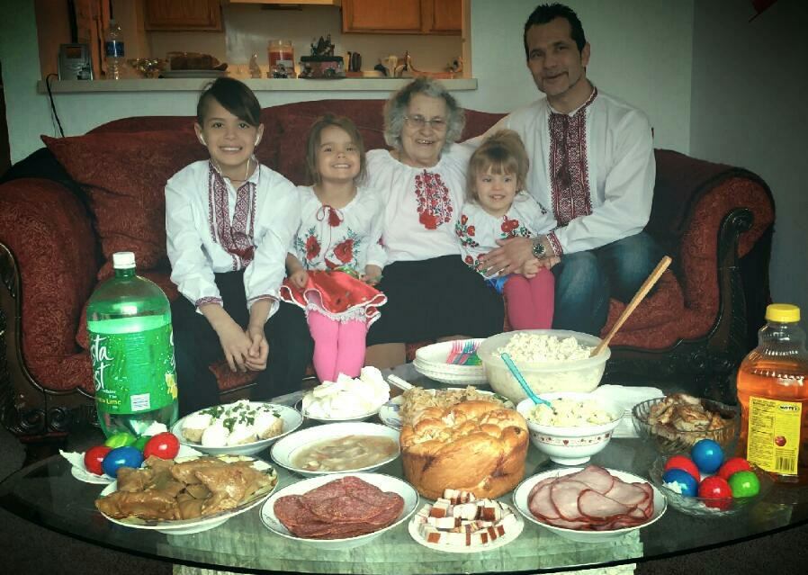
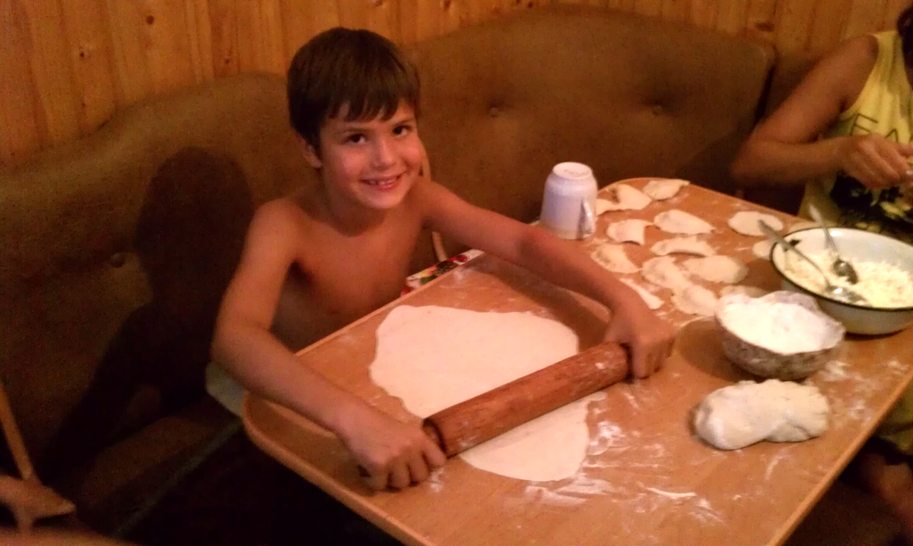

Ukrainian Food Gallery
This gallery highlights traditional Ukrainian dishes and a couple of my own personal cultural moments that connect food with family and tradition.





Ukrainian Cooking Video
Watch this video to see someone preparing varenyky.